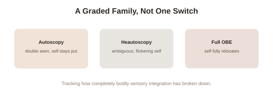

Chapter 4: Autoscopy and the Wider Family of Related Phenomena
Chapter 1 covered Blanke's original, single-patient discovery in detail. That case turned out to be the opening of a much broader, more carefully mapped area of clinical neurology — a family of related phenomena, each with its own specific, distinguishable signature, that together give a considerably more complete picture than any one case study could.
Distinguishing the two main types
Clinical neurology now distinguishes several related but genuinely different phenomena within this territory. Autoscopy (from Greek, roughly "self-seeing" — an experience in which a person sees a projected image or double of themselves, while their sense of self, their "I," remains located inside their own physical body) is different from the classic out-of-body experience specifically because the person's felt center of awareness doesn't relocate — they see a visual double of themselves from their normal, embodied vantage point, closer to seeing a mirror image that shouldn't be there than to floating outside their own body. Heautoscopy is a stranger intermediate case: the person's sense of self shifts back and forth, or becomes genuinely ambiguous, between the physical body and the seen double — sometimes reporting an uncertain or split sense of which one is really "them" in the moment, rather than the clean single-location switch that defines a full OBE. The classic out-of-body experience itself represents the most complete disembodiment: the felt center of awareness relocates entirely to the external vantage point, typically with the physical body seen from outside as a separate object rather than experienced as home.
What produces each variant, and why the differences are informative
Follow-up research building on Blanke's original finding — including further, more systematic electrical stimulation and lesion studies — has found these three variants associate with subtly different patterns of disruption within the broader network the TPJ sits inside, particularly involving how strongly and how completely visual, vestibular (balance), and proprioceptive (body-position) signals are being integrated at the moment of the disruption. A milder or more partial disruption tends to produce autoscopy (a visual double appears, but the felt self stays put); a more complete failure of integration tends to produce the full relocated-self experience of a classic OBE; heautoscopy's ambiguous, flickering quality is consistent with an integration failure that's genuinely incomplete or unstable, rather than cleanly resolved in either direction. This graded pattern — not a single on/off switch, but a spectrum of related effects tracking the specific degree and character of the underlying sensory-integration disruption — gives Chapter 1's basic TPJ finding considerably more explanatory precision than the original single case alone could demonstrate.

Beyond epilepsy: where else this shows up
While Blanke's original case involved epilepsy-related brain stimulation, subsequent case documentation has found autoscopic and OBE-type phenomena arising across a wider range of neurological contexts — migraine with aura, certain psychiatric conditions, specific brainstem and cortical lesions from stroke or injury, and — as Chapter 2 covered — the ordinary physiological transition into and out of REM sleep in people with no neurological condition at all. This breadth is itself informative: it further supports the idea that these experiences reflect a general, common vulnerability in an ordinary sensory-integration process most brains carry out seamlessly and invisibly, rather than a rare quirk specific to one particular condition or population — the same basic machinery, in other words, that everyone relies on continuously without noticing, until something disrupts it, whatever that specific disrupting cause happens to be.
Why a full taxonomy matters for reading anecdotal reports
Having this more precise, graded framework gives a genuinely useful practical tool for evaluating a first-person account: a report that clearly describes a felt double while the person's sense of "I" stayed put is describing something meaningfully different, mechanistically, from a report of full self-relocation — and a careful, well-documented account should generally be specific enough to distinguish which variant is actually being described, rather than lumping all of this territory together under one vague label. This precision doesn't settle the deeper metaphysical questions Chapter 3 already addressed directly — but it does mean the phenomena themselves are considerably better mapped and better understood, mechanistically, than the still-open metaphysical question about them might suggest.
Try this
Ideas for noticing or testing this in your own life.
- Next time you read or hear a first-person "out-of-body" account, try classifying it using this chapter's three categories — did the felt self relocate fully, stay put while seeing a double, or was it genuinely ambiguous?
- Notice how much more precise a claim becomes once you have the right vocabulary for it — a useful general habit for evaluating any unusual first-person report, not just this topic specifically.
Worth pulling on?
A few loose threads from this chapter — if any of these genuinely grab you, that's a good sign of where to go next.
- Beyond the clinical and physiological picture built across four chapters, this topic has a much older life inside specific religious and cultural traditions, worth understanding on its own terms. → The subject of the final chapter in this topic: cultural and historical accounts of the out-of-body experience across traditions.
- Migraine with aura's link to these phenomena connects to a broader set of unusual perceptual disruptions worth its own separate exploration. → Not covered in depth here — a natural direction for future reading if this chapter's neurological breadth interested you specifically.